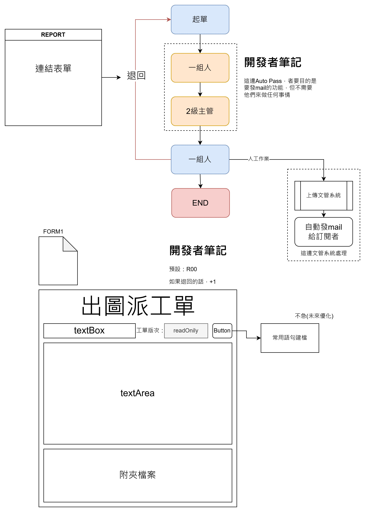
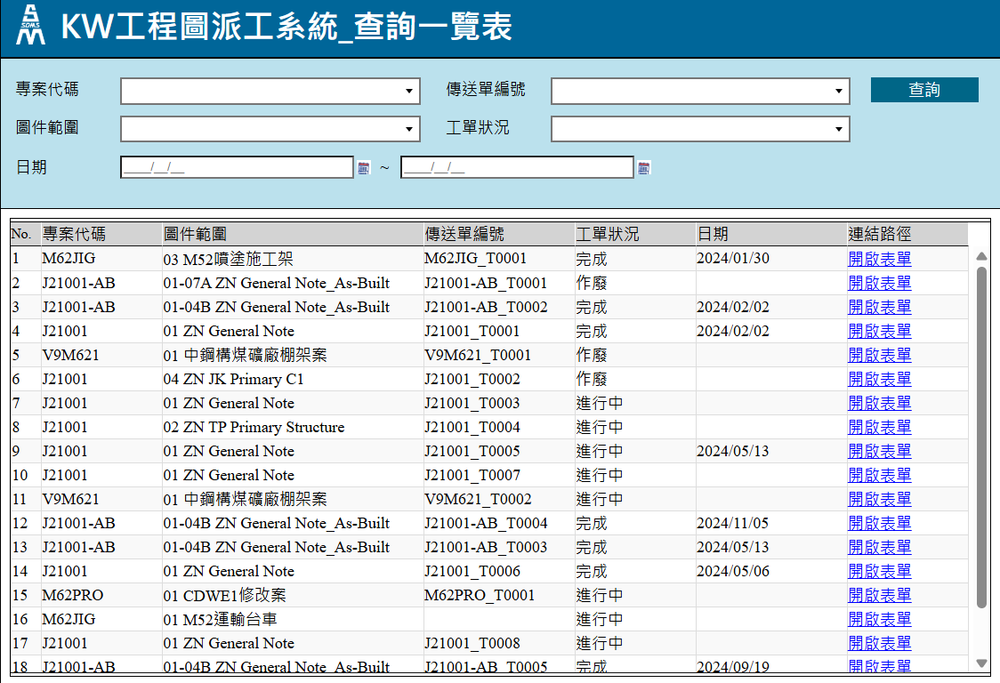

派工系統表單簽核流程設計
1. 製圖單位主管可使用該系統派工給製圖工程師。
2. 收到工令單後可依照需求，繪製設計圖，以及相關附件資料。
3. 結構圖繪製完成後，可直接派發給需求提出單位，並且自動記錄所有簽核流程。
4. 結案後，自動歸檔並保存圖面，做為追溯資料。
工程圖製圖派工系統
透過系統配發製圖派工單，並紀錄所有表單資料流向，最終自動歸檔。


工程圖製圖派工查詢報表
可透過報表，追溯派工單歷史資料，以及所有派工單目前的單況。